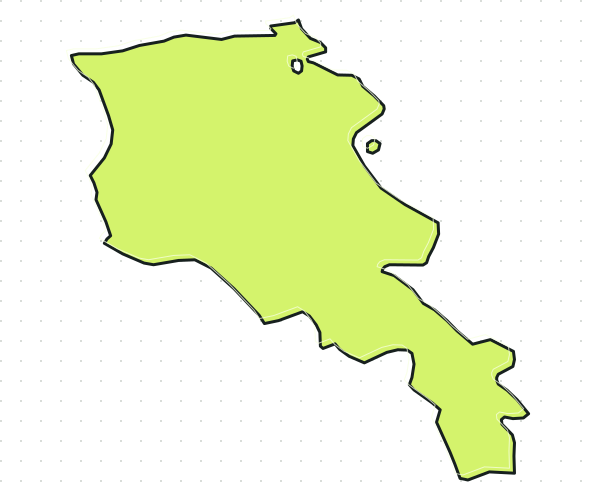

Հետազոտություն և ապացույցներ
Կարողությունների մասին հարցերի պատասխաններ՝ հաստատված փաստաթղթերից և աղբյուրների հղումներով։
Մշակում ենք հատուկ AI օգնականներ և գործակալային աշխատանքային հոսքեր CRO-ների, լաբորատորիաների և արտադրողների համար։ Աղբյուրներին հղվող կազմակերպությունների ինդեքսը օգնում է նաև գտնել գործընկերներ։
CRO-ների, լաբորատորիաների, դեղագործական և բժշկական տեխնոլոգիաների թիմերի համար նախագծում ենք AI օգնականներ՝ հարմարեցված նրանց փաստաթղթերին, գործիքներին ու հաստատման քայլերին։
Ընտրում ենք չափելի խնդիր, նախագծում փորձնական լուծում, մշակում անհատական գործակալ և տրամադրում շարունակական աջակցություն։
Կբացվի տեղային, չուղարկվող հարցման նախագիծ։Կարողությունների մասին հարցերի պատասխաններ՝ հաստատված փաստաթղթերից և աղբյուրների հղումներով։
Հաճախորդի RFQ հարցումների դասակարգում, աշխատանքի շրջանակի և պատասխանների նախագծեր։
Հաստատված ընթացակարգերի որոնում և արտադրական փաստաթղթերի նախագծեր՝ մարդու ստուգմամբ։
Մեկ առաջնահերթ գործընթաց՝ հստակ փորձարկումներով և ընդունման չափանիշներով։
Հաստատված փաստաթղթեր, թիմի հասանելիություն և մարդու ստուգման քայլեր։
Ինտեգրում ձեր կողմից թույլատրված տվյալների պահոցների և գործիքների հետ՝ ըստ նախագծի։
Վճարովի փորձնական ծրագիր → անհատական մշակում → ամսական սպասարկում։ Ինդեքսն օգնում է գտնել գործընկերներ, իսկ AI մշակումն ու աջակցությունը մեր հիմնական վճարովի ծառայություններն են։
Յուրաքանչյուր կազմակերպության էջը կապվում է իր հրապարակային աղբյուրին։ Բացակայող տեղեկությունը չենք ենթադրում։
Ինդեքսում հայտնվում են միայն պաշտոնական աղբյուրով հաստատված կազմակերպությունները։
Քարտեզը և թվերը ձևավորվում են ինդեքսի աղբյուրներով հաստատված գրառումներից։ Դրանք շուկայի ամբողջական չափում չեն։

Սահմանը՝ Natural Earth (հանրային սեփականություն)։ Նշիչները ցույց են տալիս քաղաքները, ոչ թե հաստատությունների հասցեները։
Ինդեքսի արժեքը տեղեկության հետագծելիության մեջ է։ Յուրաքանչյուր քայլ օգնում է ավելի լավ հարց տալ։
Ընտրեք ոլորտը և ծառայությունը։
Բացեք ընկերության աղբյուրը և տեսեք վերջին ստուգման օրը։
Համադրեք տեղեկությունը նույն չափանիշներով։
Պատրաստեք հստակ հարցում և ուղարկեք այն ձեր ընտրած ճանապարհով։
Նկարագրեք ձեր խնդիրը։ Հարթակը կկազմի խմբագրվող նամակ, իսկ դուք կորոշեք՝ երբ և ում ուղարկել այն։
Տվյալները չեն ուղարկվում կամ պահվում